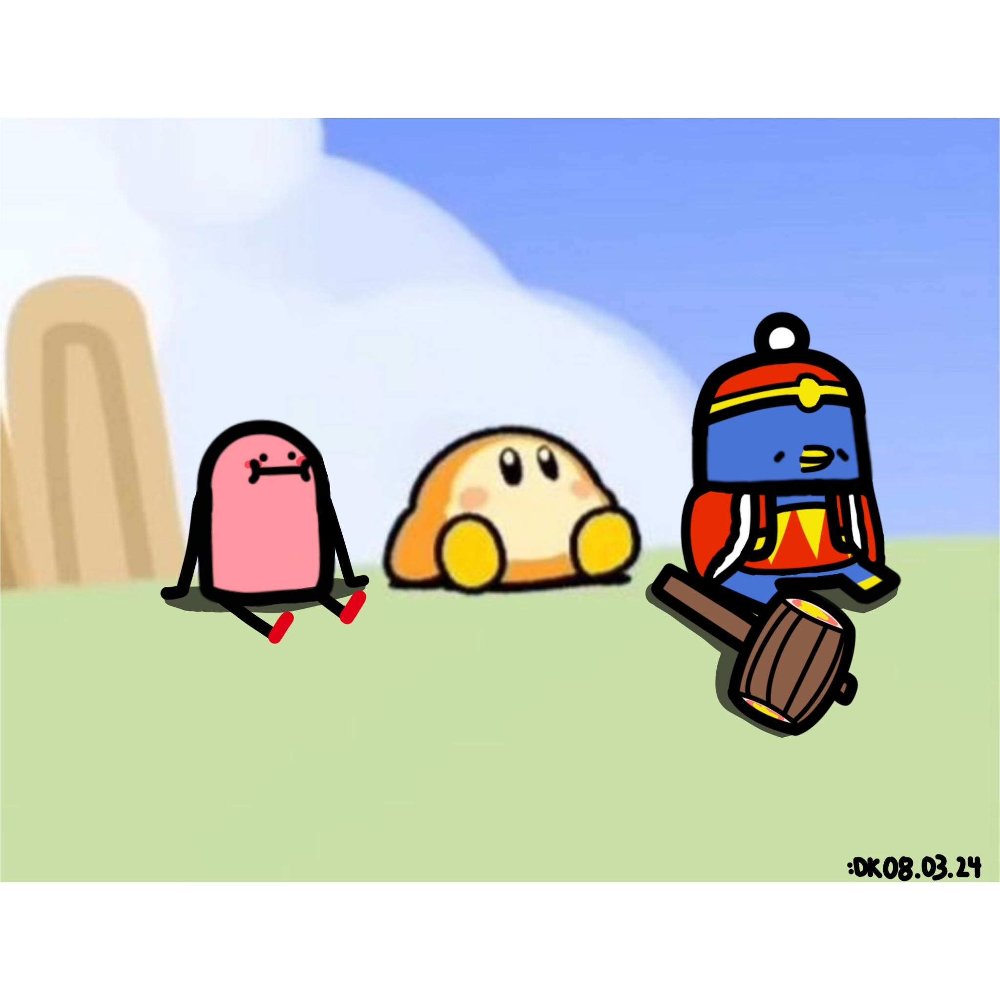

Spent this week undoing the board size I started with. 6x6 was too big
for the number of pieces on it, so it became 5x5 with
the King centered and the Queen dropped from the default layout — then
too cramped for a two-square pawn advance, so
5x6.
Both changes were less about the board than about everything that had
quietly assumed it was square. The board renderer and the camera both
centered on one axis and had to learn to handle width and height
separately. A pile of tests had the old dimensions written into them,
and fixing those turned up something more useful than the failures:
several tests had been passing for the wrong reason —
one checked a slide that was no longer possible on the new board,
another checked a row that had moved out from under it. Also raised
font sizes across every screen, reworked the Mine so it moves one
square and shows you its blast radius instead of asking you to guess,
and set up a build script so I can make an APK from the command line.
This one actually started in the last few days of July: a small
tactical chess game, phone-first, where the interesting part is not
the chess but the units you bring to it. I wrote a design spec and an
implementation plan before touching the project, which is a habit I
picked up from the journal app and have not regretted. The engine is
data-driven on purpose — how a piece moves, and what
its ability does, are both described as data rather than code, so
adding a unit is meant to be filling in a form, not writing a new
class. Eight units to start, the six standard pieces plus a Berserker
and a Mine, and the Mine was the first thing that
genuinely fought the engine: it destroys whatever touches it, which
makes the order things happen in suddenly matter, and it took
two passes to settle whether the moving piece arrives before or after
the explosion. The last days of the month went on pawn skins and a
gacha with weighted rolls and loadout slots, which needed one new kind
of movement and unlocked four special units at once, plus mandatory
promotion as its own phase of the turn rather than a
special case bolted onto the move code.
August proper was four systems, each one specced before any code.
Time control: a per-player countdown clock, written
so it has no dependency on the game around it and can be tested on its
own, plus an Armageddon tiebreak that settles draws with weighted odds
instead of calling it even. Local save: plain JSON on
disk, storing ids rather than the objects themselves, so the file
keeps making sense as the game changes around it.
Networked two-player matches over a direct
connection. The messages the two devices send each other are
deliberately plain data with nothing engine-specific in them, so that
whole layer is testable without a running game, and each player brings
their own loadout. Gating input on whoever's turn it is was the piece
that made it feel like a match rather than two people editing one
board. Then mobile: fitting the camera to the board,
one adaptive layout shared by all six screens, touch input, portrait
lock, and keeping the UI clear of the notch. Networked Armageddon is
the one thing I deferred on purpose.